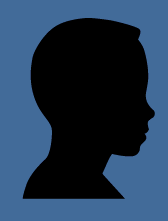

 Я совсем недавно начал(а) знакомиться с виртуальной жизнью, но мне по давней традиции тоже захотелось создать свою домашнюю страничку для моих новых виртуальных друзей и знакомых, чтобы они могли посмотреть мои фотографии, почитать обо мне, черкнуть пару строчек в мою гостевую книгу.
А может и просто случайный посетитель вдруг захочет познакомится со мной, и у меня появится еще один виртуальный друг? :)
На фотографии изображен(а) я. Качество картинки не очень хорошее, к сожалению, поэтому она не четкая и разглядеть черты моего лица немного проблематично. Но в целом заметно, что я вполне ничего:)
Если ты так тоже думаешь, то давай как-нибудь встретимcя, поболтаем, чайку попьем в кафешке?:) Кто знает, может быть мы и в реальной жизни станем друзьями:)